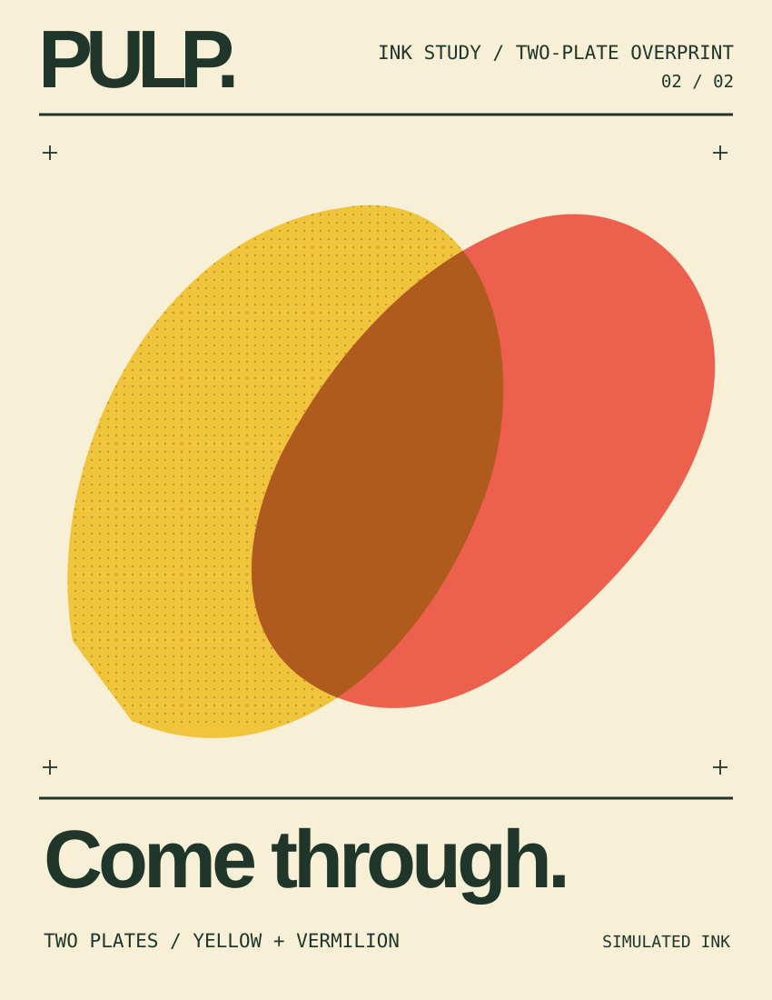
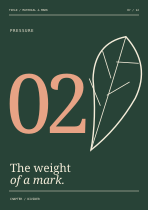

An index
of marks.
Three marks from the fictional PROOF studio briefs. Each one opens the artwork that gives the mark its meaning.

Plate / PULP
Two inks, one darker crossing.
The clear strip in PULP’s first plate turns into the darkest part of the second poster when the inks meet.
Open the PULP specimen
Contour / FIELD
One line, two scales.
A leaf sits beside the masthead on FIELD’s cover and cuts through a chapter numeral six pages later.
Open the FIELD specimen
Revision / TERRA
The number changes the object.
TERRA’s Mist labels carry the same finish name. A close look at the specification band distinguishes the samples.
Open the TERRA specimen